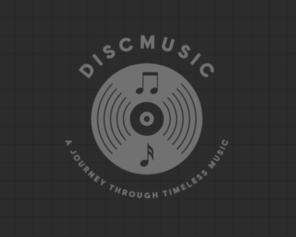

DiscMusic adalah platform digital yang dirancang khusus untuk pecinta musik, menyediakan koleksi discografi
lengkap dari berbagai artis, mulai dari musisi ternama yang telah mendunia hingga talenta baru yang sedang naik daun.
Kami memahami bahwa musik adalah lebih dari sekadar hiburan; itu adalah perjalanan penuh makna yang mencerminkan
karya, dedikasi, dan cerita di balik setiap nada dan lirik.
Dengan DiscographyMusic, Anda dapat dengan mudah menemukan dan menjelajahi album, single, EP, hingga
kolaborasi lintas genre seperti pop, rock, R&B, hip-hop, hingga musik klasik. Kami memastikan setiap koleksi kami
selalu diperbarui, sehingga Anda tidak akan ketinggalan informasi terbaru tentang rilisan atau proyek baru dari artis
favorit Anda.
Lebih dari sekadar menyediakan data, kami berkomitmen untuk menjadi jembatan antara musisi dan penggemar
mereka, menghadirkan informasi yang lengkap, akurat, dan mudah diakses. Di sini, Anda dapat menelusuri perjalanan
karier musisi dari awal hingga pencapaian puncak mereka, memahami cerita di balik setiap karya, dan menemukan
inspirasi melalui perjalanan mereka.
Kami percaya bahwa setiap lagu, album, atau single memiliki cerita yang layak untuk dihargai.
DiscographyMusic hadir untuk memastikan setiap perjalanan musik memiliki tempatnya sendiri, memberikan pengalaman
unik bagi pengguna, dan terus merayakan keindahan musik yang menyatukan kita semua.
Kami juga memberikan ruang bagi para pengguna untuk berpartisipasi dalam memperkaya koleksi kami. Jika ada
artis favorit yang belum tersedia discografinya di DiscographyMusic, kalian bisa langsung mengirimkan permintaan!
Tim kami akan dengan senang hati menambahkan koleksi discografi tersebut agar pengalaman eksplorasi musik kalian
semakin lengkap dan memuaskan.